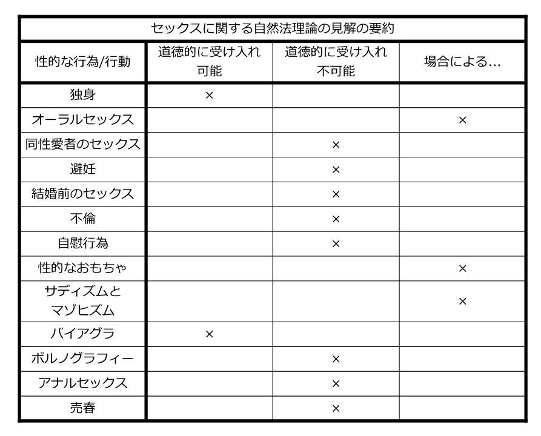

10 性的な倫理
お前が[セックスをする]ときにのみ、[…]お前は最も潔く生きていて、最も潔くお前自身だ。[…]セックスはただの摩擦と浅い楽しみではない。セックスはまた死への復讐でもある。死を忘れるな。決してそれを忘れるな。そうだ、セックスもまたその力には限界がある。[…]しかし、教えてくれ、どの力のほうが大きいのだ?106
一般的な道徳的ルールは、すべての人間関係に適用されるのと同様にセックス行為における他者の扱いにも適用されるが、セックスに内在する道徳性はない。107
10.1 セックスの哲学入門
私たちがこの章を書いている最中に、アラブ首長国連邦の裁判所は、20代の外国人の夫婦を結婚外のセックスをしているとして拘束しました。もし有罪判決を受けた場合、彼らは長期の実刑に直面することになるでしょう。108 同性カップルが教会で「祝福」されることができるかどうかについての2017年の英国でのキリスト教の総会の投票の直後、有名な神学者であり、学術的な教授でもあるジョン・ミルバンクは、次のようにツイートしました:「同性関係に『独身』を求める必要はない。それは、同性愛者の肉体的愛情を完全な(異性愛者の)セックスと誤って同等に見なしている。」109 今、ここには微妙で洗練された神学的なポイントがあったかもしれません。あるいは、そうでないかもしれません。ミルバンクへの適切な反応がどのようなものであったとしても、それが明確にするもの、そしておそらく指摘する必要もないほどのものとは、「セックス」が人々にとって非常に重要な問題であり、これまでも、そしてこれからも常にそうであり続けるということです。さらに、「セックス」というまさにその概念が哲学的に興味深いものであることが明らかになっています。結局のところ、「セックス」とは何でしょうか?そのような文脈の中で、異性愛者のセックスを「完全な」セックスとして話すことは、何を意味するのでしょうか?モニカ・ルインスキーは、オーラルセックス「だけ」だったので、彼女が元米国大統領のビル・クリントンとセックスをしていないと言ったのは正確なのでしょうか?セックスを定義する上で性的な喜びの役割は何ですか?同意とは何ですか?ポルノグラフィーは間違っていますか?性的倒錯とは何ですか?もちろん、私たちはこれらの問題のいくつかのごくわずかな部分だけを扱うことができるだけであり(種々の論文の優れた調査についてはSobel 2008を参照してください)、私たちはセックスと関連するいくつかの倫理的問題に焦点を当てます。
私たちは、「セックス」の定義について議論することからこの章を始めます。次に私たちは、さまざまな道徳哲学者がセックスについて言うであろう事柄のいくつかを議論することに移ります。うまくいけば、あなたはこれが正しい順序である理由がわかるはずです。セックスについての倫理的議論の多くは、セックスとは何であるかをすでに前提としていますが、その前提は議論の余地がある、ということを私たちは示唆します。したがって、私たちはセックスを理解するさまざまな方法について明確にする必要があり、これによって私たちはセックスに関連するさまざまな道徳的問題をより効果的に探究することができます。
10.2 「セックスをする」とは何でしょうか?
この質問は、「性的指向」とは何ですかや、ある人の性別(ある人のジェンダーではなく)とはなんですか、といったものと同じではありません。「セックスをするとは何でしょうか?」という質問に直面したときに、困惑するような人がいるかもしれません。典型的な(いらだった)哲学者です!答えは明白ではないですか?セックスとは、ペニスを膣に挿入する性行為(性交) — これで話は終わり。まあ、たぶん…しかし、いくつかの他の質問を考慮してみましょう。セックスの定義においてオーガズムはどれほど本質的ですか?ある2人が性交を行うものの、オーガズムはないと想像してみてください。これは「セックスをした」のでしょうか?もし1人がオーガズムに達したものの、もう1人がそうでない場合はどうですか?あるいは、人が手で性器を刺激してオーガズムへ達したと想像してください、これはセックスですか?オーラルセックスをしている人はどうですか?これは「セックスをした」とカウントできますか?強姦はどうですか?もし誰かが強姦されている場合、彼らは「セックスをした」と言うのは正確ですか?そして、物事はさらに混乱します…。
性交としてセックスが定義されていることを踏まえると、これは明らかに定義によって同性愛者のセックスは概念的に不可能であることを意味します。これは誤っていて、単純に不快に思えるかもしれません。性交としてのセックスはまた、いくつかの奇妙な状況を引き起こします。ある女性が、彼女のパートナーに対して童貞であるかどうかを尋ねて、次の返事をされたと想像してください:「うん、僕は…僕は同性愛的なペニスを肛門に挿入する性行為しかしたことがないよ。」この女性は(控えめに言っても)困惑するでしょう。彼女は、彼が自分自身を「童貞」と呼ぶことに惑わされていると理にかなった判断をするかもしれません。アナルセックスはセックスであり、その結果、性交としての「セックス」という私たちの最初の定義は不完全です。
性的行為に関わっている人々が、彼らが実際にセックスをしているかどうかについての不確実さを訴えることもあるという事実によっても、事態が複雑になることに注意してください。私たちは、誰かに「お前は彼女とセックスをした?」と尋ねて、「まあ、それは場合によるかな…」という返事を受け取ることを想像できます。それは、「セックスをする」ということは、私たちが最初に考えたよりも、もっと複雑な概念であるように見えます。これらの点は、私たちが「セックスをする」ことに関わる倫理的な質問について話すときに留意しておく価値があります。特に、読者は、「セックスをする」ということの特定の説明が使用されているかどうか、そして、重要なこととして、その定義が変更された場合はどうなるかを自分自身に尋ねてみるべきです。
10.3 自然法とセックス
私たちが第4章で自然法理論(NLT:Natural Law Theory)について議論したときのことを思い出してもらうと、もしあるものがその機能を果たすのであれば、そのものは良いものです。良いナイフとはよく切れるものであり、良いギターは良い音を奏でるもの等々です。したがって、私たちが「良い」セックスとは何かを調べるには、私たちはセックスとは何のためのものなのかを問う必要があります。その機能とは何でしょうか?私たちは、この質問に答える中で、道徳的に受け入れられる性的な行為が何であるかを見つけ出すことができるべきです。
聖アクィナスと他の自然法理論家は、私たちの性的能力には1つの真の目的 — 生殖があると言うでしょう。確かに、セックスには喜びがありますが、それはこの目的を達成するために喜びがあるのです。もしこれが正しいならば、性的な活動は、生殖と矛盾しない場合に、そしてその場合に限り良いものであり、性的な活動がその目的を妨げる限りにおいて悪いものです。その結果は欲望、望み、理由、希望、恐怖などから独立しており、自然法理論家(NLT:Natural Law Theorist)にとっては、性的行為が間違っているか正しいかということは、文化や、宗教などの影響を受けない単純な客観的な事実である、ということを理解しておくことが重要です。これは、NLTにとって、私たちが性的にどのように行動するべきか、あるいはするべきでないかに関する客観的な道徳的真実があることを意味します。
そして私たちは、伝統的なNLTにとっては結婚前のセックス、自慰行為、獣姦、避妊、同性愛行為、ポルノグラフィー、不倫がすべて間違っていると言うことができます。結婚前のセックスは間違っています。なぜなら、子供たちが安全な結婚の領域外の世界にもたらされるかもしれないからです。同性愛行為は生殖に向かう傾向が全くありません。避妊は生殖の目的を妨げます。自慰行為とポルノグラフィーは、性的行為を自分自身に向かって内側へ集中させ、生殖的な目的を妨げます。しかしながら、人々はしばしばNLTを誤解するため、多くの説明をしておくことが不可欠です。
NLTは、自然な目的を妨げるものは間違っていると主張しているのではなく、むしろ人間の行為のみがそうであると主張しています。そのため、NLTによると、たとえば、ボノボのサルが「レイプ」、「自慰」、「同性愛」の行為を行うという事実は、彼らが道徳的に間違ったことをしているということを意味するものではありません。
さらに、何かを間違って使用することと、それをまったく使用しないこととの間には違いがあります。もし私たちがナイフをバイオリンの弓として使おうしたならば、私たちはナイフを間違って使用していますが、ナイフ入れに入れたままにしておく時にはそうではありません。したがって、性的能力を使用しないこと(独身・禁欲)は、NLTにとって道徳的に受け入れ可能です。
しかしながら、一見したところでは、NLTには多くの反例があるようです。間違っていないことに私たちが同意するものの、自然な目的を妨げるように見えるものがたくさんあります。たとえば、私が定期的に自分の手を使って歩いている、または私は自分の完璧に優れた口を使うのではなくチューブを介して食事をしていると想像してください。これらの両方とも私の手と口の自然な目的を妨げるようですが、そのようなことは確実に道徳的に間違っていないのではないですか?
しかし、これらの類の例は、手や口の自然な目的を「妨げる」ために能力が使用されるケースではないため、NLTは同意するでしょう。一方で、もし私たちが誰かの顎を針金で閉じて口を通じて食べることができないようにしたり、誰かが完璧に良い足を持つにもかかわらず常に手を使って歩いていたら、これは異なるかもしれません。110しかし、実情としては、ある能力を本来のありようではなく他の何かのために単純に使うことは、その能力をその目的を妨げるように使うことと同じではありません。
111これらの例は次の映像でエドワード・フェザーによって言及されています: https://www.youtube.com/watch?v=rynlfggqAcU&t=5773s
さらに、その主張は、それが目的を妨げるであろうという知識を持ちながらある能力を使用するならば、それは間違っている、というものではありません。それは、目的を妨げるためにそれを使うことをあなたが意図しているならば、それは間違っている、というものです。そのため、たとえば、ある女性が妊娠しているときに、その女性とある男性とがセックスすることは、NLTにとって間違いではありません。
また、その主張は、何かが「不自然」であればそれは間違っている、ということでもありません。何かが正しいか間違っているかを決めることは、何かが「人工的であるかどうか」を尋ねることと同じではありません。もしそうであった場合には、眼鏡をかけたり薬を飲んだりすることは間違いになりますが、NLTはそういうことを表明してはいません。性的なおもちゃや、バイアグラのようなさまざまな薬の使用は、それらが不自然なものであっても間違いではありません。
このようにして生殖とセックスを結びつけることはセックスからすべての楽しみを取り上げることになるのではないかと思うかもしれませんが、そうではありません。人が、食べるという自然な機能を常に満たしながら、多くの異なる方法で料理を食べることができるのと同じように、性的な器官の長期的な機能の一部である限り(たとえば、オーラルセックスは、結局のところ生殖を目的とした性行為の一部である限り、必ずしも除外されるわけではありません)、性的な行為や、空想などのさまざまな形に関与することができます。
しかし、上で言ったように、NLTは同性愛者の性行為とすべての形の避妊を除外しています。なぜなら、避妊具を使用しながらセックスをすることは、その目的を妨げることを意図しながら性的な能力を使うからです。
この理論の妥当性は、必ずしもあなたがどれだけ宗教的であるかによって定まるわけではありません。私たちは、無神論かつ進化的な生物学的説明であって、やはり私たちの性的な能力の「機能」について話すようなものを与えることもできます。
セックスの倫理に対するこのNLTの全体的なアプローチについて、私たちが尋ねることができる多くのことがあります。しかしながら、尋ねるべき主な質問は、何かが当てはまるからといってなぜ私たちがそう考えるのか、ということへ向きます。すなわち、再生産することが性的な能力の機能であり、それが物事がどうあるべきかなのです。この「である/べきである」の隔たりは多くの道徳的な理論を悩ませますが、ここでは特にプレッシャーをかけているようです。簡単に言えば、避妊具を使用している人が次のように言うのは問題とはならないようです。「確かに、私は自分の性的な能力の自然な機能を妨げることを意図しているが、なぜそれが私がそうするべきでないことを意味するのか?」

10.4 カントとセックス
カントは、異性愛者による、生涯にわたる、そして一夫一婦制の結婚という文脈の中でセックスは道徳的に許容されると考えています。同性愛、自慰行為、不倫、結婚前のセックスなど、それらの文脈から外れた性的な行為は道徳的に間違っています。彼がこのように考える理由は非常に複雑であり、それは、彼の文章のすべてがそうであるように、この主題についての彼の文章が信じられないほど込み入っているからではなく、大まかに言って、セックスに関する彼の見解が、彼の定言命法の第2の定式化に基づくものであるからです(第2章参照):あなたは人間性(あなた自身の人格の中にあるものと、他の人の人格の中にあるもの)を、決して単なる手段としてではなく、常に同時に目的として扱うように行動せよ。
カントは、聖アウグスティヌス(354–430年)や時にはフロイトのように、アラン・ソブル(1947年-)が呼ぶところの性的悲観主義者です(プラトンと多くの現代哲学者は性的楽観主義者として数えられるでしょう)。この悲観論者の間の大まかな感情は、私たちの性的欲望と衝動、そしてそれらの衝動に基づいて行動することは、品位を落とすものであるということです。私たちの性質の性的な部分は、人間がどのようにふるまうべきかには適しておらず、私たちの適切な道徳的生活を脅かします。
カントにとって、性的欲望は、他の人間の体を耽溺の対象とする唯一の衝動です。カントは性的な欲求についてこう語ります:
愛する人は、相手の幸福を心に止めることから遠く離れて、彼の[性的]欲望と[性的]欲求を満たすために、相手を悲惨さの深みに突き落とし、[…][セックスをした後に]その人は、干からびたレモンが投げ捨てられるのと同じように、見捨てられる。112
第2章を思い出してもらうと、カントは他の人を何一つ欠けることのない人として扱うことが道徳的であるために重要であると考えていますが、彼にとっては、これこそが性的な欲望に欠けているものです。つまり、セックスでは私たちは他人を対象物として扱い、何一つ欠けることのない人として扱ってはおらず、その結果、私たちは不道徳に行動しています。彼の定言命法の第2の定式化の言葉で言えば、セックスをする中では、私たちは人々を単に目的のための手段として扱っています。次の、カントによる性的悲観主義の完全な表現を考えてみましょう:
性的関心は、ある人間が他の人間それ自体に対して持つような傾向性ではなく、別のもののセックスに対する傾向性であるため、あるセックスを他のセックスに優先させ、その欲望を満足させることを通じてそのセックスを不名誉にするという点において、それは人間本性の低下の原則である。113
そこで、もしこれがセックスについての彼の一般的な悲観的見解であるならば、それはどのように倫理観に関係してくるのでしょうか?現状では、いかなる性的欲望や行為も道徳的に間違ったものとなるように見えますが、もしそうであれば、それはカントにとってみると、人類の存続は、不道徳な行動の証拠であることを意味します!それは確実に間違っています。まあ、カントにとって、それが間違っていない唯一の理由は、結婚の役割です。
カントは、結婚の文脈の中では、そして結婚の文脈の中でのみ、セックスと性的欲望は、他人を単なる目的のための手段として単純に扱うこと以上のものになると考えています。しかし、なぜ?
まず私たちは、カントが結婚によって何を意味しているのかを理解しなければなりません:
[結婚]とは、お互いに平等な互恵的な権利を与え、お互いに自らの全体を、それを自由に使える完全な権利を伴って相手に対して委ねることを請け負うという、2人の間の合意である。114
このため、私たちは、性的パートナーを対象物化し、目的のための単なる手段として使っているという非難を避けることができます。なぜなら、結婚の中でのセックスでは、あなたはお互いを1人の全体的な人間として扱い、そこには相互関係があるからです。結婚の中でのセックスは、単に性器や、性的欲望や、喜びではなく、全体的な人間についてのものです。これはどのように機能するでしょうか?これが、ソブルがこの問題にアプローチし始めた方法です:
しかし、結婚で[のセックスを通して別の人を]獲得することは互恵的であるために、それぞれの人は彼または彼女の人間性を取り戻す(そして、結局のところ、それを失うことはない)。私が私自身をあなたに「委ね」る時には、それによってあなたは私を獲得するが、あなたもあなた自身を私に「委ね」て、それによって私はあなたを獲得する。この「あなた」には、あなたがすでに獲得した「私」が含まれており、私たちは互いに自分自身を委ねるが、その後に取り戻す。115
しかし、この相互関係は、結婚以外の性的関係には存在しません。これは多くのレベルで理解することが非常に難しく、私たちは読者がこのことにあまりひきずり込まれないことをお勧めします。
私たちは、カントが複雑であり、答えは簡単ではないということを示したかったのです。偉大なカント学者たちはまだ、セックスに関する彼の考え方をどのように理解するか確信が持てていません。しかし、覚えておくべきことは、定言命法の第2の定式化を通じて、カントは、異性愛者の結婚の外でのセックスが間違っていると考えています。結婚の中でなら、それは受け入れられます。
10.5 セックスと功利主義
あなたが第1章から思い出すように、功利主義は、それが特定の行為であることに基づいて何らかの行為を排除するものではありません。これは、もし功利主義が正しければ、私たちは何らかの特定の性的な行為が常に間違っているとは言えない、ということを意味します。結婚前のセックスや、同性愛者のセックスや、自慰行為や、オーラルセックスは道徳的に受け入れられます。問題は、その行為を実行することが、その行為を実行しない場合よりも全体としてより多くの喜びをもたらすかどうかによって決定されます。これは、答える必要のあるいくつかの質問と留保を残します。
第1に、セックスは、通常は喜びにつながるものの、それは功利主義がセックスをする行為が常に良いという主張をすることを意味するものではありません。功利主義は、強姦と小児性愛が道徳的に間違っていることを私たちに示すだけの余地を残しています。たとえ犯罪者や小児性愛者が彼らの行為から喜びを得たとしても、被害者の精神的および肉体的苦痛、親族や愛する人の悲嘆など、その行為により引き起こされた全体的な不幸のほうが非常に大きいことを見て取るのに多くを必要とはしません。
第2に、セックスが通常は喜びをもたらすという理由だけでは、功利主義が、可能な限り多くのセックスをする義務が私たちにはあるという主張をすることを意味するわけではありません。なぜなら、私たちが行うことができる、より多くの全体的な幸福をもたらすことがあるからです。あるいは、私たちは、常にセックスをしているということは関係性や心身の健康に有害な影響を及ぼすかもしれない、ということを推測できます。
第3に、功利主義にとって、結婚の中での異性間のセックスであっても、強制や脅迫、あるいは投げやりなセックスによる一般的な不幸がある場合は道徳的に間違っている可能性があります。そのようなときは、他のほとんどの活動がより多くの幸福をもたらすでしょう。(カント主義者の説明とNLTの説明との対比に注意してください。)
第4に、不倫または複数の性的パートナーを持つことは、道徳的に容認することができます。たとえば、ある夫婦が自分たちの結婚を楽しく、かつ興味深いものにするために互いに他の人とセックスをすることに同意する場合に、全体的な幸福が増加するケースを想像することができます。あるいは、一般に長期的な関係に興味がない、あるいはそのような時間のない人は、複数の性的パートナー(または売春相手)と相互に同意することによってより幸せになると考えることもできます。
第5に、さまざまな性行為を考えるときに私たちが何をするべきかに関する質問に対して、ミルは、彼のより高い喜びとより低い喜びとの区別のために、ベンサムとは異なる答えを与えます。一般的にミルはセックスを評価しませんでしたし、彼はそれから生まれた喜びを軽視し、より低い価値のものだととらえていました。これは、ミルがいくつかの喜びが他のものと質的に異なり、それゆえ、他のより低い喜びを上回ると考えていたからです。しかしながら、ベンサムはこの区別をしないでしょう(第1章9節参照)。
したがって、もし私たちがこの区別を念頭に置くならば、私たちは性行為の種類を区別することができるでしょう。おそらく、いくつかの性行為は他よりも低く、あるものは高いのでしょうか?私たちは読者に、これが意味することのいくつかを考えることを任せます。
10.6 セックスと徳理論
徳理論家は多くの応用倫理の問題について書いていますが、彼らは典型的にはセックスについては書いていません。それについて書いた人々(エリザベス・アンスコム(1919–2001年)、ピーター・ギーチ(1916–2013年)、ロジャー・スクルートン(1944年-))は、しばしばより保守的な性的倫理を支持しています。しかしながら、性的倫理の伝統的な説明を擁護しない人も幾人かおり(たとえばラジャ・ハルワニ(1967年-))、その結果、性的行為に関する「ただ1つの」徳理論的見解を見つけ出そうとするのは有益ではありません。そのため私たちは、読者に対して、徳理論のレンズを通して性的倫理について考えるときに生じるいくつかの問題を考えるための枠組みを与えようと思います。
思い出してもらうと、徳理論は私たちが決断を下すのを助けるために考案された理論ではありません。私たちは徳理論家に「この状況やあの状況で何をするかをどのようにして導き出すべきか?」と尋ねることはできません。この種の質問に直面したとき、徳理論家は、有徳な行為主体がするであろうことをあなたはするべきである、と答えるでしょう。しかし、有徳であるとはどういうことですか?まあ、一般的な考え方では、有徳であることとは、正しい方法で、正しいタイミングで、正しい理由で、そして、正しい範囲で、世界のものごとに対応できるように、特定の気質や習慣を発展させることです。
これを感じ取るためには、アリストテレスの「中庸のドクトリン」を思い出してください(第3章4節参照)。ここでの考え方は、ある感情に関して過剰と不足の中間で行動することによって、私たちは合理的に、すなわち、有徳に行動することになります。もし私たちがこれを続けていくならば、私たちはこのような行動のための習慣や気質を発展させ、そして、どのような特定の状況であっても、私たちに求められるものを「見て」、正しい方法で反応することをうまく行えるようになるでしょう。たとえば、「恐怖」を取り上げてみましょう。
恐怖を過剰に持つことは臆病になることであるのに対し、恐怖の欠如とは無分別または向こう見ずであることです。恐怖に関して合理的に行動することとは、勇気の徳を持つことです。私たちが勇敢に行動すればするほど、私たちは勇気を持つことをうまく行えるようになり、何が勇気あるものかを見るために他の人からの助けが少なくて済むようになるでしょう。私たちは、他の徳のためにこれを繰り返すことができます。たとえば、「寛大さ」の徳は、けちと浪費との間の中庸になるでしょう。
性的倫理を論じるときには、いくつかの異なる徳が関係するかもしれません。アリストテレスのアプローチの観点から言えば、関連する徳は節度(悪徳は放縦)です。この徳は、私たちの欲望や欲求と関係しています。これには、食べ物や飲み物、そして私たちにとって重要なセックスが含まれます。この徳の大雑把な現代的な解釈は、「控え目」ということでしょう。節度の徳を持っている人は、暴飲暴食をする人であったり、絶対的な禁酒や自身を飢えさせる人ではないでしょう。セックスに関しては、節度の徳を持つ行為主体は、抑制のきかない性的欲望によって単純に駆り立てられたり、自然な性的欲望を完全に否定したりする人ではなく、むしろその人は、正しい時に、正しい人と、正しい理由でセックスをするでしょう。
私たちの行動が抑制を欠いたものであるかどうかを見る1つの方法は、私たちの行動が他の目標や徳と矛盾するかどうかということです。1つの例は健康です。セックスに関して抑制を欠いた人(たとえば誰とでもセックスをする)は、おそらく身体的にも感情的にも、潜在的に不健康になる可能性があります。また、友情や教育など、私たちが価値のあるものと考える他のものを検討してみましょう。これらのものでも、私たちは放縦がどのようにしてこれらの目標の達成を困難にするかを想像することができます。絶えず続く望んでもいない性的な誘惑が、友情をいかにして破壊するか、あるいは不可能にするかを考えてみてください。他にもいくつか、徳理論家がセックスについて言うかもしれないことがあります。
第1に、徳理論家は、強姦は常に間違っていると言うでしょう。なぜなら、それは他の人が持つ、いつどのようにセックスをするか、そして誰とするかの選択という性的な自主性に違反しているからです。第2に、小児性愛もまた同様の理由で常に間違っています。不倫は間違っているかもしれません。なぜなら、抑制を欠いた人は性的欲望のために結婚の誓約を破るであろうからです。
したがって、功利主義と同じように、徳理論家がある種の性的行為を正しいか、あるいは間違っているかと考えるかどうかの答えは、有徳な行為主体がその行為をするかどうか、そしてその行動が中庸に適合しているかどうかに依存するでしょう。
10.7 まとめ
少なくともプラトン以降の哲学者たちは、セックスについて議論してきました。なぜなら、それは数多くの興味深い哲学的問題を提起するからです。セックスは人と人との関係性や相互作用についてのものであり、その結果、それは道徳的な問題のように見えます。セックスが道徳的な問題ではないと信じている人は、自分が強姦や小児性愛が道徳的に間違っていると考えるかどうかを自分自身に尋ねてみるべきです。しかしながら、私たちがこのような明確なケースを通り過ぎてさらに進むと、問題はより微妙で複雑になります。
私たちは、非常に異なる意見を与える多くの哲学的理論を考慮しました。自然法理論家は、セックスの「保守的な」視点を確立するために、機能と目標という考えを用います。カント主義者もまた、セックスの「保守的な」視点を確立するために、性的欲望の不適当な性質についての多少の悲観的な見方を加えて、自主性と人に対する尊重という考え方を用いています。功利主義と徳理論はそれほど悲観的ではなく、この本で見てきた他の問題についての彼らの見解と同じように、異なる状況で何が起きるかを見るためにより開かれています。
私たちはあなたにこれらの2つの質問を残しておきます。この章を読んだ上で、あなたはセックスは何だと思いますか?そして、道徳理論は私たちの性的な実践をどのように導くべきですか?
10.8 学生によくある間違い
- アクィナスはもしセックスが妊娠につながっていないならばそれが間違っていると考えている、と思う。
- アクィナスにとってセックスとは投げやりで退屈なものでなければならない、と思う。
- 功利主義者が私たちはだれとでもセックスすべきであると考えなければならない、と考える。
- 「セックス」が何を意味するのか明確ではないことを認識していない。
- どのように「セックス」を定義するかによって、道徳的な質問にどのように答えるかが変わることを認識していない。
10.9 検討すべき問題
- あなたのところに宇宙人が訪ねてきたと想像してみてください。この宇宙人は言いました。「私は「セックスする」ということについてたくさん耳にしています。あなたがた人間はこれによって何を意味しているのですか?」あなたはどのように返事しますか?
- あなたはセックスが道徳的な問題だと思いますか?もしそうなら、道徳哲学者はこの分野でどのような種類の質問を検討すべきでしょうか?
- NLTは耳栓を使うことや自転車に乗ることが間違っていると考えるでしょうか?結局のところ、それらは耳と脚の自然な機能を妨げるように見えます。
- あなたは無神論者であり、かつNLTになることができますか?
- 一部の国では、同性愛者の結婚が許されています。それらの国の中では、カントは同性愛者のセックスが道徳的に受け入れられると言うだろうと思いますか?
- なぜカントは複数の妻や夫を持つことが道徳的に間違っていると考えるのですか?
- あなたはミルを性的楽観主義者と見なしますか、それとも性的悲観主義者と見なしますか?
- 功利主義にとって、獣姦は道徳的に受け入れられるでしょうか?
- 規則功利主義(第1章)は、これらの問題のいくつかについて、たとえば、不倫が道徳的に正しいのか間違っているのかについて、何を言うでしょうか?
- ミルのより高い喜びとより低い喜びの区別は、この文脈においてどのように関連しているでしょうか?
- セックスに関連した徳と悪徳とは何ですか?
- 性的行為の道徳性を考えるために中庸のドクトリンを使ってください。
10.10 重要な用語
セックス
自然法理論
中庸のドクトリン
自主性
行為主体
手段と目的
10.11 参照文献
Aristotle, The Nicomachean Ethics (Oxford: Clarendon Press, 1908), freely available at http://sacred-texts.com/cla/ari/nico/index.htm
[アリストテレス全集 15「ニコマコス倫理学」内山勝利・神崎繁・中畑正志編集委員、岩波書店、2014年]
‘Couple “Detained in UAE for Sex Outside Marriage”’, BBC News, freely available at http://www.bbc.co.uk/news/world-africa-39208946
Goldman, A. H., ‘Plain Sex’, Philosophy & Public Affairs, 6.3 (1977): 267–87.
Halwani, R., The Philosophy of Love, Sex and Marriage: An Introduction (Oxford: Routledge, 2010), https://doi.org/10.4324/9780203856369
Mill, J. S., ‘Utilitarianism’, in Utilitarianism and Other Essays, ed. by Alan Ryan (London: Penguin Books, 2004).
[功利主義論集「功利主義」川名雄一郎・山本圭一郎訳、京都大学学術出版会、2010年]
Milbank, John [@johnmilbank3], ‘There is no Need to Demand “Celibacy” in Gay Relationships. That Wrongly Equates Same Sex Physical Affection with Full (Heterosexual) Sex’, https://twitter.com/johnmilbank3/status/831996919400513536
Bentham, Jeremy, ‘An Introduction to the Principles of Morals and Legislation’, in Utilitarianism and Other Essays, ed. by Alan Ryan (London: Penguin Books, 2004).
―, An Introduction to the Principles of Morals and Legislation, freely available at http://www.econlib.org/library/Bentham/bnthPML18.html
[関嘉彦責任編集「世界の名著49 ベンサム/J・S・ミル」、中央公論新社、1979年]
Roth, Philip, The Dying Animal (London: Random House, 2010).
[「ダイング・アニマル」上岡伸雄訳、集英社、2005年]
Soble, Alan, The Philosophy of Sex: Contemporary Readings (Plymouth: Rowman & Littlefield, 2002).
―, The Philosophy of Sex and Love: An Introduction (Paragon House, 1998).
P. Roth, The Dying Animal, p. 69.↩
Alan H. Goldman, ‘Plain Sex’, p. 49.↩
‘Couple “Detained in UAE for Sex Outside Marriage”’, BBC News, http://www.bbc.co.uk/news/world-africa-39208946↩
5↩
5↩
I. Kant, Lectures on Ethics, cited in A. Soble, The Philosophy of Sex: Contemporary Readings, p. 200.↩
Cited in ibid., p. 260.↩
Ibid., p. 202.↩
Ibid., p. 278.↩